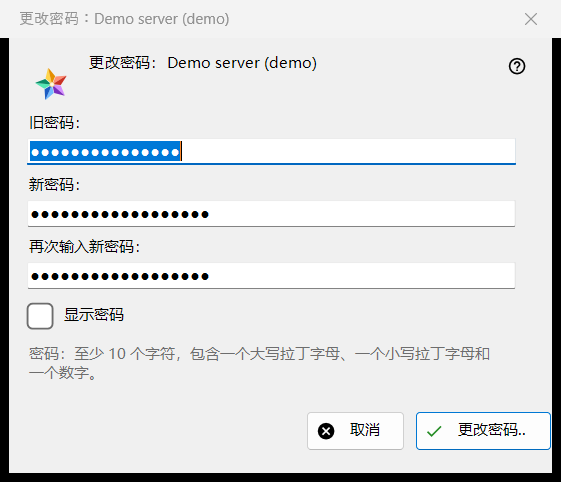
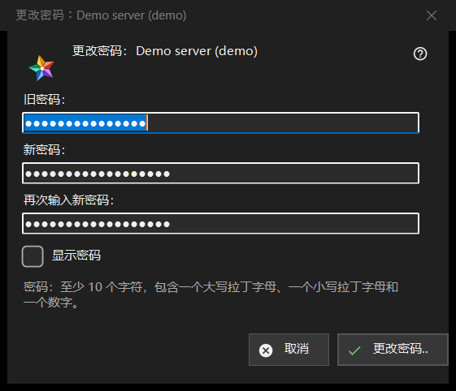

更改密码
用途说明
更改你在交换服务器上的账户密码。它从资源列表「我的设备」区域中服务器条目的「更改密码..」按钮打开；该服务器在线时才显示此按钮。标题中写明账户。


操作顺序
- 输入旧密码。
- 输入两次新密码。
- 点击「更改密码..」；「取消」关闭窗口，不发送任何内容。
界面元素
三个字段
「旧密码：」、「新密码：」和「再次输入新密码：」；「显示密码」可将它们显示出来。窗口关闭时，这些框会被清除。窗口只负责收集密码：由查看器通过该条目的连接把它们发送给服务器。
密码规则
说明写明：至少 10 个字符，包含一个大写和一个小写拉丁字母以及一个数字。窗口在发送任何内容之前检查这一点，并指出不符合的部分，例如「密码少于 10 个字符。」或「密码中没有数字。」；它还会提示「请填写旧密码。」和「两个密码不一致。」。服务器应用同样的规则，并以服务器为准。
更改之后
成功时，状态栏显示「密码已更改。这台电脑继续工作，账户的其他设备必须重新登录。」被拒绝的情形有：旧密码不对；尝试次数过多（等一分钟后重试）；服务器拒绝了此更改；没有到服务器的连接（先连接再重试）。